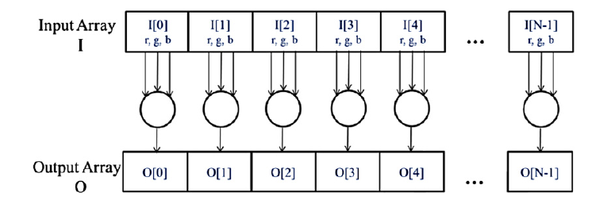
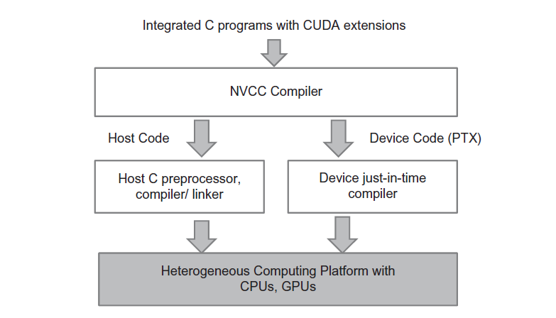
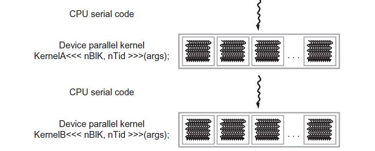
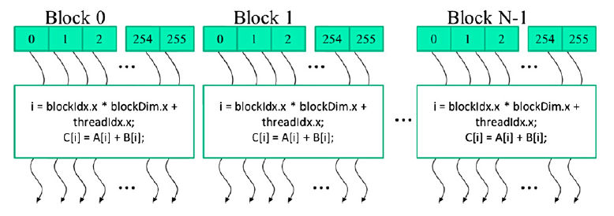
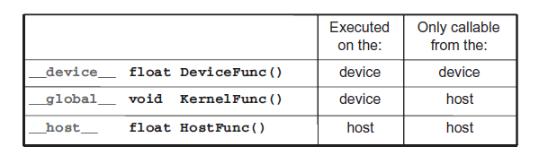

Learning outcomes
Scope
This module builds the first working CUDA mental model: a CPU program allocates device memory, copies input data to the GPU, launches a kernel over a grid of threads, and copies results back. The focus is on writing and reading small CUDA C++ programs correctly, especially how each thread identifies the data element it owns.
1. Data Parallelism
1.1 Summary
Data parallelism is the central pattern behind many GPU-accelerated programs. The core observation is that slow modern applications are often limited by the amount of data they must process: pixels in images and videos, grid points in simulations, atoms in molecular dynamics, or scheduling entities in operational systems. In many of these domains, each element can be processed mostly independently from the others.
The grayscale conversion example makes the idea concrete. A color image is represented as an array of RGB pixels, and each output luminance value depends only on the red, green, and blue components of the corresponding input pixel. The weighted sum L = r * 0.299 + g * 0.587 + b * 0.114 can therefore be applied independently to every pixel. This independence is what lets a CUDA program assign many pixels to many GPU threads and complete the overall transformation much faster than a serial loop when the dataset is large enough.

1.2 Data Parallelism vs. Task Parallelism
Data parallelism decomposes work by data element: the same operation is applied across many independent or nearly independent items. In the grayscale example, every pixel follows the same formula, so the parallel structure is “many data elements, same computation.” This is usually the main source of scalability on massively parallel processors, because large datasets can expose millions of similar pieces of work.
Task parallelism decomposes work by activity: different independent tasks can proceed at the same time, even if they do not apply the same operation. For example, one task might perform vector addition while another performs matrix-vector multiplication; in larger applications, tasks may include force calculations, neighbor discovery, I/O, or data transfers. Task parallelism can improve throughput and overlap different stages of an application, but data parallelism is typically the pattern that most directly fills a GPU with enough work to scale with more execution resources.
2. CUDA C++ Program Structure
2.1 Summary
CUDA C++ extends ordinary C++ with a small set of language keywords and runtime-library calls that let one program coordinate work across a CPU and one or more GPUs. The CPU side is called the host; the GPU side is called the device. A source file can contain normal host code together with device code, and the device portions are marked explicitly so the compiler and runtime know which parts execute on the GPU.
CUDA source files normally use the .cu extension. The extension signals that the file may contain CUDA C++ constructs in addition to ordinary C++ code, such as __global__ kernel declarations, built-in thread variables, CUDA Runtime API calls, and kernel launches. A normal .cpp file is usually compiled by a standard C++ compiler, while a .cu file is compiled with NVIDIA's CUDA compiler driver, nvcc.
nvcc is not a plain standard C++ compiler. It is a CUDA compiler driver that separates host code from device code, sends the CPU-side portion to a host compiler such as g++, clang++, or MSVC, compiles the GPU-side portion for CUDA-capable devices, and links the pieces into one executable. This is why CUDA-specific syntax is accepted by nvcc even though a standard C++ compiler would reject it.

nvcc compiler driver separates host code from device code, compiles each path with the appropriate toolchain, and links the result for a heterogeneous CPU/GPU platform. Source: Programming Massively Parallel Processors example repository.Execution begins on the host as a conventional sequential control flow. When the host launches a kernel, the CUDA runtime creates a grid of device threads. Each thread runs the same kernel program but can operate on a different portion of the data. When all threads in the grid finish, control continues on the host, which may launch more kernels or perform additional CPU-side work. This structure is what makes CUDA heterogeneous: the CPU keeps orchestration, setup, and irregular control, while the GPU receives large batches of regular parallel work.

2.2 Threads and kernel launches
A CUDA device thread is written as if it were a small sequential execution path, but thousands or millions of such threads may be launched by one kernel call. This is different from manually creating CPU threads: CUDA relies on hardware and runtime support designed for very large thread counts, so thread launch and scheduling are lightweight enough for data-parallel workloads.
For an image conversion kernel, one simple mapping is one thread per output pixel. For vector addition, one simple mapping is one thread per output element. Later optimizations may assign multiple elements to each thread or restructure memory accesses, but the beginner mental model is direct: launch enough device threads to cover the data, and make each thread compute its assigned result independently.
2.3 A Vector Addition Kernel
We now use vector addition to illustrate the CUDA C program structure.
A traditional C program that consists of a main function and a vector addition function. In all our examples, whenever there is a need to distinguish between host and device data, we will prefix the names of variables that are processed by the host with “h_” and those of variables that are processed by a device “d_”.
// Compute vector sum h_C = h_A+h_B
void vecAdd(float* h_A, float* h_B, float* h_C, int n)
{
for (int i = 0; i < n; i++) h_C[i] = h_A[i] + h_B[i];
}
int main()
{
// Memory allocation for h_A, h_B, and h_C
// I/O to read h_A and h_B, N elements each
…
vecAdd(h_A, h_B, h_C, N);
}Assume that the vectors to be added are stored in arrays A and B that are allocated and initialized in the main program. The output vector is in array C, which is also allocated in the main program.
The pointers to these arrays are passed to the vecAdd function, along with the variable N that contains the length of the vectors.
The vecAdd function uses a for-loop to iterate through the vector elements. In the ith iteration, output element h_C[i] receives the sum of h_A[i] and h_B[i]. The vector length parameter n is used to control the loop so that the number of iterations matches the length of the vectors.
When the vecAdd function returns, the subsequent statements in the main function can access the new contents of C.
A straightforward way to execute vector addition in parallel is to modify the vecAdd function and move its calculations to a device.
#include <cuda.h>
…
void vecAdd(float* h_A, float* h_B, float* h_C, int n)
{
int size = n* sizeof(float);
float *d_A, *d_B, *d_C;
…
1. // Allocate device memory for A, B, and C
// copy A and B to device memory
2. // Kernel launch code – to have the device
// to perform the actual vector addition
3. // copy C from the device memory
// Free device vectors
}At the beginning of the file, we need to add a C preprocessor directive to include the cuda.h header file. This file defines the CUDA API functions and built-in variables.
Part 1 of the function allocates space in the device (GPU) memory to hold copies of the A, B, and C vectors and copies the vectors from the host memory to the device memory. Part 2 launches parallel execution of the actual vector addition kernel on the device. Part 3 copies the sum vector C from the device memory back to the host memory and frees the vectors in device memory.
2.4 Device Global Memory and Data Transfer
Part 1 and Part 3 of the vecAdd function need to use the CUDA API functions to allocate device memory for A, B, and C, transfer A and B from host memory to device memory, transfer C from device memory to host memory at the end of the vector addition, and free the device memory for A, B, and C. We will explain the memory allocation and free functions first.
Below you can see two API functions for allocating and freeing device global memory.
cudaMalloc()
• Allocates object in the device global memory
• Two parameters
1. Address of a pointer to the allocated object
2. Size of allocated object in terms of bytes
cudaFree()
• Frees object from device global memory
• One parameter
1. Pointer to freed objectThe cudaMalloc function can be called from the host code to allocate a piece of device global memory for an object
The cudaFree function can be called from the host code to free the device global memory allocated for an object
An example:
float *d_A;
int size = n * sizeof(float);
cudaMalloc((void**)&d_A, size);
...
cudaFree(d_A);It is useful to read the allocation call from the inside out. If the device pointer variable is named d_A, the call is written as cudaMalloc((void**)&d_A, size). Some codebases use the suffix form A_d instead; the reasoning is identical for cudaMalloc((void**)&A_d, size).
Once the host code has allocated device memory for the data objects, it can request that data be transferred from host to device. This is accomplished by calling one of the CUDA API functions shown below.
cudaMemcpy()
• Memory data transfer
• Requires four parameters
1. Pointer to destination
2. Pointer to source
3. Number of bytes copied
4. Type/Direction of transferThe cudaMemcpy function can be called from the host code to transfer data from host to host, host to device, device to host and device to device.
A more complete version of vecAdd function is shown below:
void vecAdd(float* h_A, float* h_B, float* h_C, int n)
{
int size = n* sizeof(float);
float *d_A, *d_B, *d_C;
cudaMalloc((void **)&d_A, size);
cudaMemcpy(d_A, h_A, size, cudaMemcpyHostToDevice);
cudaMalloc((void **)&d_B, size);
cudaMemcpy(d_B, h_B, size, cudaMemcpyHostToDevice);
cudaMalloc((void **)&d_C, size);
// Kernel invocation code - to be shown later
...
cudaMemcpy(h_C, d_C, size, cudaMemcpyDeviceToHost);
// Free device memory for A, B, C
cudaFree(d_A);
cudaFree(d_B);
cudaFree(d_C);
}Error checking and handling. CUDA Runtime API calls return a value of type cudaError_t. Beginner examples often omit these checks to keep the control flow short, but production code should test the returned value close to the call that produced it. This makes errors such as invalid arguments or lack of device memory visible near their root cause.
cudaError_t err = cudaMalloc((void **)&d_A, size);
if (err != cudaSuccess) {
printf("%s in %s at line %d\n",
cudaGetErrorString(err), __FILE__, __LINE__);
exit(EXIT_FAILURE);
}2.5 Kernel Functions and Threading
In CUDA, a kernel function specifies the code to be executed by all threads during a parallel phase. Since all these threads execute the same code, CUDA programming is an instance of the well-known Single-Program-Multiple-Data(SPMD).
When a program’s host code launches a kernel, the CUDA run-time system generates a grid of threads that are organized into a two-level hierarchy. Each grid is organized as an array of thread blocks. All blocks of a grid are of the same size; each block can contain up to 1024 threads.
The total number of threads in each thread block is specified by the host code when a kernel is launched. The same kernel can be launched with different numbers of threads at different parts of the host code. For a given grid, the number of threads in a block is available in a built-in blockDim variable.
The blockDim variable is of struct type with three unsigned integer fields: x, y, and z, which help a programmer to organize the threads into a one-, two-, or three-dimensional array. For a one-dimensional organization, only the x field will be used. For a two-dimensional organization, x and y fields will be used. For a three dimensional structure, all three fields will be used. The choice of dimensionality for organizing threads usually reflects the dimensionality of the data.
In general, the number of threads in a block should be multiple of 32 due to hardware efficiency reasons.
CUDA kernels have access to two more built-in variables (threadIdx, blockIdx) that allow threads to distinguish among themselves and to determine the area of data each thread is to work on. Both of the variables are of struct type with three unsigned integer fields: x, y, and z.
An example of a grid is shown below:

A unique global index i is calculated as:
i = blockIdx.x * blockDim.x + threadIdx.xBelow there is a kernel function for vector addition. The syntax is ANSI C with some notable extensions. First, there is a CUDA C specific keyword “__global__” in front of the declaration of the vecAddKernel function. This keyword indicates that the function is a kernel and that it can be called from a host function to generate a grid of threads on a device.
// Compute vector sum C = A+B
// Each thread performs one pair-wise addition
__global__
void vecAddKernel(float* A, float* B, float* C, int n)
{
int i = blockDim.x*blockIdx.x + threadIdx.x;
if(i<n) C[i] = A[i] + B[i];
}In general, CUDA C extends the C language with three qualifier keywords that can be used in function declarations. The meaning of these keywords is summarized below:

By default, all functions in a CUDA program are host functions if they do not have any of the CUDA keywords in their declaration. This makes sense since many CUDA applications are ported from CPU-only execution environments. The programmer would add kernel functions and device functions during porting process.
Note that one can use both “__host__” and “__device__” in a function declaration. This combination tells the compilation system to generate two versions of object files for the same function. One is executed on the host and can only be called from a host function. The other is executed on the device and can only be called from a device or kernel function.
The second notable extension to ANSI C, as in the vecAddKernel, are the built-in variables “threadIdx.x” “blockIdx.x” and “blockDim.x”. Recall that all threads execute the same kernel code. There needs to be a way for them to distinguish among themselves and direct each thread towards a particular part of the data. These built-in variables are the means for threads to access hardware registers that provide the identifying coordinates to threads. Different threads will see different values in their threadIdx.x, blockIdx.x and blockDim.x variables.
There is an automatic (local) variable i, in the vecAddKernel. In a CUDA kernel function, automatic variables are private to each thread.
A quick comparison between the host and the kernel code reveals an important insight for CUDA kernels and CUDA kernel launch. The kernel function does not have a loop. The loop is replaced with the grid of threads. The entire grid forms the equivalent of the loop. Each thread in the grid corresponds to one iteration of the original loop. This type of data parallelism is sometimes also referred to as loop parallelism, where iterations of the original sequential code are executed by threads in parallel.
Note that there is an if (i < n) statement in addVecKernel. This is because not all vector lengths can be expressed as multiples of the block size. For example, let’s assume that the vector length is 100. The smallest efficient thread block dimension is 32. Assume that we picked 32 as block size. One would need to launch four thread blocks to process all the 100 vector elements. However, the four thread blocks would have 128 threads. We need to disable the last 28 threads in thread block 3 from doing work not expected by the original program. This allows the kernel to process vectors of arbitary lengths.
When the host code launches a kernel, it sets the grid and thread block dimensions via execution configuration parameters. This is illustrated below. The configuration parameters are given between <<< and >>> before the traditional C function arguments. This is not C++ template syntax, it is not an overloadable operator, and it is not part of the function name. It is CUDA-specific grammar recognized by nvcc: the kernel name remains vecAddKernel, the values inside <<<...>>> describe the execution configuration, and the values inside the following parentheses are the kernel arguments. A standard C++ compiler does not parse this form.
The first execution-configuration parameter gives the number of thread blocks in the grid. The second specifies the number of threads in each thread block. In this example, there are 256 threads in each block. In order to ensure that we have enough threads to cover all the vector elements, we apply the C ceiling function to n/256.0. The ceiling is needed because the grid must contain whole blocks, not fractional blocks. For example, if the program needs 1000 useful threads and each block contains 256 threads, ceil(1000 / 256.0) = 4, so the launch creates 4 * 256 = 1024 total threads. The first 1000 threads map to valid vector elements; the remaining 24 threads compute indices beyond the vector length and are disabled by the if (i < n) guard.
int vectAdd(float* A, float* B, float* C, int n)
{
// d_A, d_B, d_C allocations and copies omitted
// Run ceil(n/256) blocks of 256 threads each
vecAddKernel<<<ceil(n/256.0), 256>>>(d_A, d_B, d_C, n);
}2.6 Kernel Launch
The complete code for the vecAdd kernel is shown below:
void vecAdd(float* h_A, float* h_B, float* h_C, int n)
{
int size = n* sizeof(float);
float *d_A, *d_B, *d_C;
cudaMalloc((void **)&d_A, size);
cudaMemcpy(d_A, h_A, size, cudaMemcpyHostToDevice);
cudaMalloc((void **)&d_B, size);
cudaMemcpy(d_B, h_B, size, cudaMemcpyHostToDevice);
cudaMalloc((void **)&d_C, size);
vecAddKernel<<<ceil(n/256.0), 256>>>(d_A, d_B, d_C, n);
cudaMemcpy(h_C, d_C, size, cudaMemcpyDeviceToHost);
// Free device memory for A, B, C
cudaFree(d_A);
cudaFree(d_B);
cudaFree(d_C);
}Note that all the thread blocks operate on different parts of the vectors. They can be executed in any arbitrary order. Programmers must not make any assumptions regarding execution order. A small GPU with a small amount of execution resources may execute only one or two of these thread blocks in parallel. A larger GPU may execute 64 or 128 blocks in parallel. This gives CUDA kernels scalability in execution speed with hardware, that is, same code runs at lower speed on small GPUs andhigher speed on larger GPUs.
3. Guided Exercises
The complete vector addition example is available in the course repository under examples/ch02/vector_add. Start from the README in that folder for the exact compile and run instructions.
To compile the exercises locally, you need the NVIDIA CUDA Toolkit installed and nvcc available in your shell path. You also need an NVIDIA GPU with a compatible driver, or another environment where CUDA programs can be compiled and executed.
cd examples/ch02/vector_add
nvcc vector_add.cu -o vector_add
./vector_add